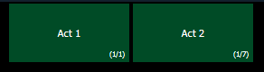

You can recall a scene to quickly jump to a cue without needing to remember its number. To recall a scene, use the [Go to Cue] button and select the {Scenes} softkey.
This will open up the scene selection display in the CIA. The scene's label and cue will display. Press or click on the scene to select it.

Scenes can also be recalled by using the direct selects. See Scenes on Direct Selects for more information.